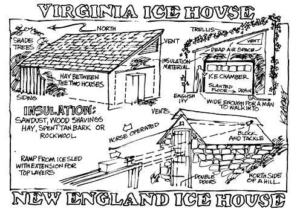
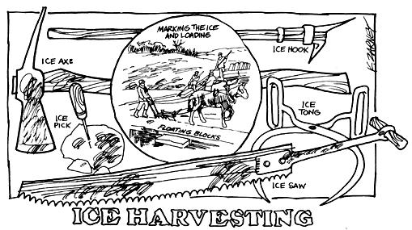

Since the early 1800's the icehouse has been one of the self-sufficient, non-electric homestead's most valuable buildings. The structure has taken many shapes and forms over the years but all have been calculated to do the same thing: exclude heat and outside air while draining water from the slowly melting ice.
Icehouses are easy to build in a permafrost area: "just" dig a few feet into the continuously frozen ground. In the temperate zone where most of us live, however, it's a somewhat different story. . . although there's nothing complicated about the theory or construction of such a building.
The old-timers in New England sometimes stored their ice in a heavily walled stone structure set into the north side of a hill. Folks in other parts of the country-such as Virginia-more frequently favored a frame building within a building well-insulated with sawdust, wood shavings, hay, bark or (more recently) rock wool. Since the second type of house is probably easier for a duffer to build, we'll consider the frame design more closely.
You'll naturally want to determine how big to make your icehouse before you start gathering the necessary materials for its construction . . . and size depends on how much ice you expect to use . . . which, in turn, hinges on the number in your family and their consumption habits. One source states that and average family should pack away between 500 and 700 cubic, feet (10 to 14 tons) of ice a year. That'll take an icehouse with inside dimensions of 12 x 12 x 8 or 10 x 14 x 8. Outside dimensions should be at least two feet longer and wider than these figures and-if you keep cows-you'd better double the amount of ice right in front.
Once you've settled on a size for your building, plan to locate the structure near your main house in as shady a spot as possible. Under a tree is good, as is a site on the north side of a hill . . . or you can always build a trellis over the building later and train ivy or other vines to cover the latticework. If you try the latter method, keep the trellis at least a foot from. the building beneath (this creates a space for cool air to circulate).
Your first actual construction step will be the pouring or setting of 6" to 12"-thick footings reaching below the frost line around the base of the proposed icehouse. A concrete or, plank floor should then be installed to slant toward a drain in one corner of the building's inner chamber (ice melts faster when it stands in water). The drain-to keep cold air in and warm air out-should be of the "trapped" variety.
The outside walls of your big cold storage box can be standard 2 x 4 stud construction covered with board-and-batten or tongue-and-groove siding and a simple shed roof, slanted to the north, is all you need to top the building. Do be sure to frame out a door and ventilate the structure well at its peak under the eaves, however. So much for the house . . . now for the house within.
Build a rectangular framework of 2 x 4's, 10 to 20 inches (or big enough for a man to walk through) in from each outside wall. Board up this inside box, put a ceiling on it and frame out a door to match the one in the outside wall. Pack the space between the inside and outside walls with sawdust, shavings, tanbark, hay or rock wool and stack a foot or two of insulation on top of the inside room (leaving enough space between the top of the insulation and the roof for air to circulate).
Make the door or doors (one big one may be too heavy and you might prefer to split it in two across the center) as thick as the space between the inner and outer walls and pack it or them with insulation. Add a suitable outside and inside latch and your icehouse is finished.
Install a few shelves (to hold food) along an inner wall, if you desire, and put a one to two-foot-thick layer of sawdust on the floor. Your building is ready for ice!
Some old-timers advise cutting ice off a lake or pond when the surface has frozen only about eight inches thick (because the thinner chunks are easier to handle). Others say to wait until the ice is two feet through. All seem to agree that first-frozen ice (rather than that which has been allowed to thaw and refreeze a number of times) is best . . . and the larger the cake, the slower it melts.
Pick a cold, dry, windy day for your ice cutting (to lessen the chances of your chunks melting and sticking together).
Scrape off the snow and plane any soft, porous ice away from the area of the lake's surface that you plan to harvest. Mark the hard ice you intend to cut into blocks (two feet by two or three feet is a good size) with a series of grooves about three inches deep . . . and have at it.
Make a ramp or runway from the water to your wagon, truck or sled and pull the blocks right out of the water with tongs or a hook. When you've got a load, take it back to the icehouse and start filling the structure.
Put down one layer of ice at a time, pack each block in sawdust and make sure it doesn't touch its neighbors. Hold the outside blocks eight to twelve inches from the walls and-as each tier is finished-fill in and around it with sawdust and cover each layer of ice with four to six inches of the ground wood. Repeat until the ice-sawdust is stacked to within a foot of the ceiling (and finished off, of course, with a layer of sawdust).
As you need ice, all you do is go in and get it . . . letting in as little of the warm outside air as possible and always remembering to leave what's left covered with sawdust. The next winter, when you're ready to refill the house, haul the old sawdust out to the compost heap or the garden and pack the new ice with fresh ground wood.
The above information came, in part, from HOUSEHOLD DISCOVERIES, by Sidney Morse (1914, The Success Co.), THE SEASONS OF AMERICA PAST, by Eric Sloane (Wilfred Funk, Inc., N.Y.) and MECHANIX ILLUSTRATED, October, 1969.
|
 |
 |
|